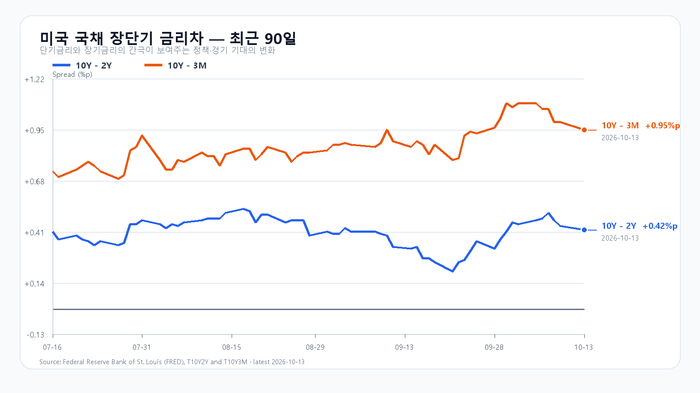
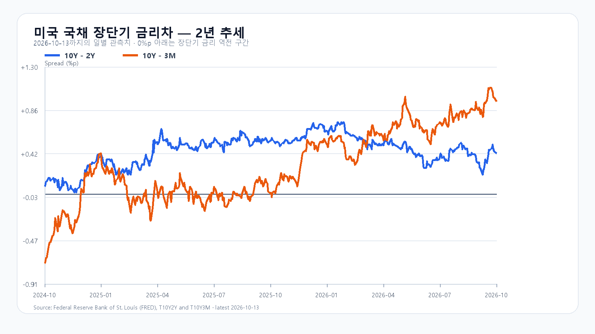

중국 메모리 경쟁에 대한 우려가 국내 반도체주를 크게 밀었다. 10월 13일 KOSPI는 6,035.35로 5.46% 하락했고 KODEX 레버리지는 81,965원으로 12.45% 내렸다. 미국에서도 Micron이 3.62% 더 하락했지만 Nvidia는 0.97%, AMD는 1.90% 반등했다. 반도체 안에서도 가격 흐름이 갈렸다.
공급 경쟁의 우려와 현재 가격은 다르다
Reuters는 CXMT의 메모리 밀도를 높이는 기술 진전 보도와 AI 투자 수익성에 대한 경계가 매도 압력을 키웠다고 전했다. 이 재료는 전일 서울장에서 이미 큰 낙폭으로 반영됐다. 미국 메모리주의 후행 하락을 국내에 같은 크기의 새 충격으로 더할 이유는 없다.
실물 가격은 아직 다른 방향이다. TrendForce의 10월 13일 DDR5 16Gb 현물 평균은 59.90달러로 0.79%, DDR4 16Gb는 83.858달러로 0.06% 올랐다. 새 기술이 장기 공급 경쟁을 바꿀 수 있어도 오늘 서버용 메모리 공급이 즉시 늘어난 것은 아니다. 주가는 미래 경쟁과 높은 기대치를 먼저 조정하고 있다.
6,000선을 지키는 반등인가
장전 국내 메모리주의 반등이 정규장까지 이어지는지가 첫 관문이다. KOSPI가 6,000선을 지키고 외국인·프로그램 매도가 둔화하면 전일 급락을 소화하는 구간으로 본다. 6,200선을 넘는 반등은 두 수급이 함께 순매수로 바뀌어야 힘을 얻는다.
기본 종가 범위는 5,900~6,200(45%)이다. 6,200 초과~6,350의 강세 가능성은 20%, 5,750~5,900 미만의 약세 가능성은 35%로 둔다. 5,900 아래에서 외국인과 프로그램이 동반 매도하면 반등 기대를 낮춘다. KODEX 레버리지는 전일 저가 78,780원, 종가 81,965원, 고가 88,340원을 각각 1차 지지·반등 기준·저항으로 본다.
오늘 밤 물가가 다음 장의 할인율을 바꾼다
미국 9월 CPI는 오늘 21:30 KST에 발표된다. 국내 정규장 뒤의 일정이므로 오늘은 결과보다 발표를 앞둔 포지션 조정이 영향을 준다. 최신 FRED 개별 금리 관측에서 10년물은 5.24%다. 유가와 물가가 높은 장기금리를 더 밀어 올리면 메모리 현물의 강세만으로 주가 부담을 상쇄하기 어렵다.
오전 반등 폭보다 09:30 이후 외국인 현물·프로그램의 방향과 삼성전자·SK하이닉스의 전일 종가 회복 여부를 함께 봐야 한다.
장전 시세
| 항목 | 최근값 | 원천 시각 |
| 삼성전자 NXT | 237,000원 · 2.16% | 2026-10-14T08:13:01.237085+09:00 |
| SK하이닉스 NXT | 1,475,000원 · 2.22% | 2026-10-14T08:13:01.237095+09:00 |
| 하나은행 USD/KRW | 1,343.00원 | 2026-10-14T06:24:20+09:00 |
| NQF 최근 거래 | 30,796.00 | 2026-10-14T08:02:59+09:00 |
| ESF 최근 거래 | 7,857.75 | 2026-10-14T08:02:56+09:00 |
| CLF 최근 거래 | 94.60 | 2026-10-14T08:02:32+09:00 |
| BZF 최근 거래 | 106.16 | 2026-10-14T08:01:26+09:00 |
미국 정규장
| 종목 | 종가 | 등락 |
| QQQ | 743.57 | -0.33% |
| TQQQ | 78.81 | -1.00% |
| SOXX | 543.90 | -0.17% |
| SMH | 588.12 | -0.49% |
| NVDA | 228.52 | +0.97% |
| AMD | 605.53 | +1.90% |
| MU | 953.19 | -3.62% |
| AVGO | 357.31 | +0.73% |


KOSPI·국내 종가 · 미국 ETF·종목 정규장 · 중국 메모리 경쟁과 AI 투자 경계 · 메모리 현물 · CPI·PPI 일정 · 미국 금리